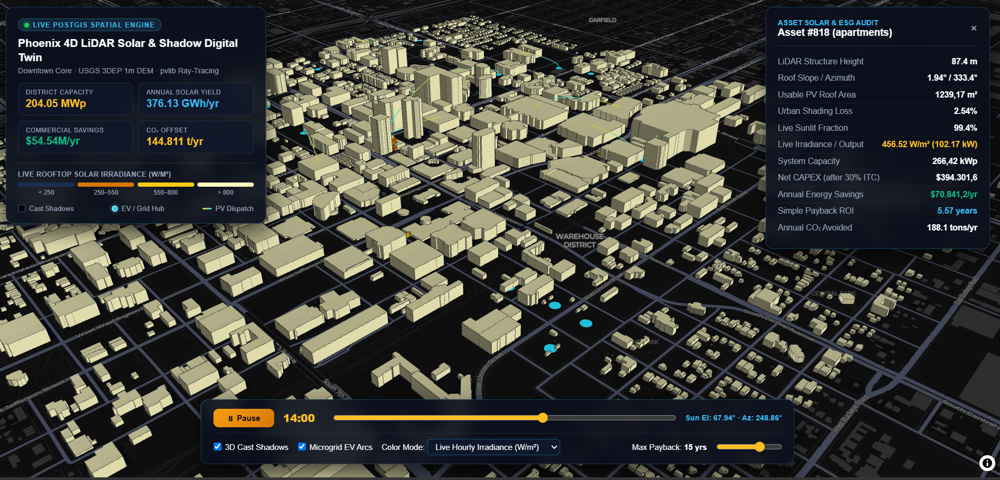
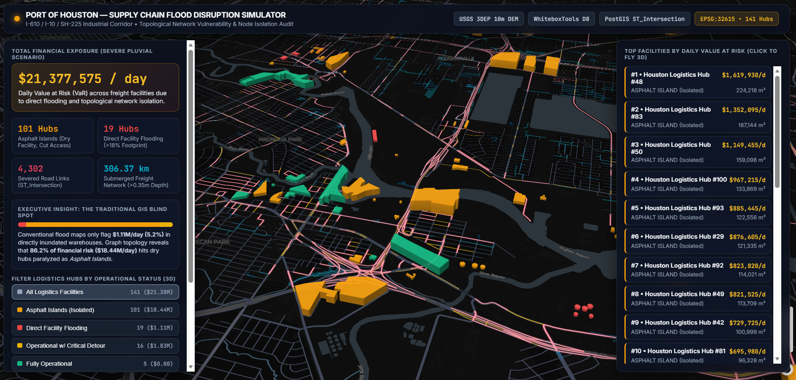
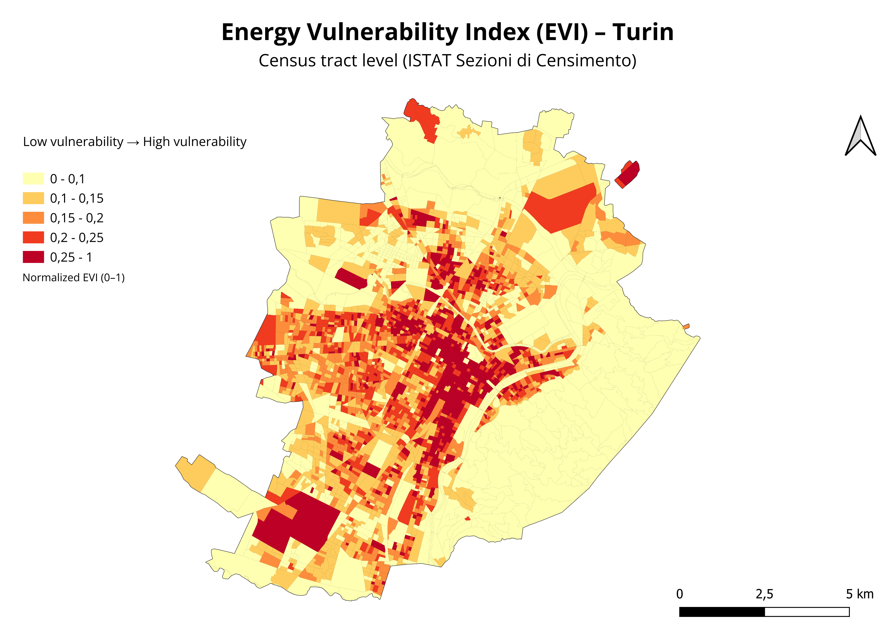
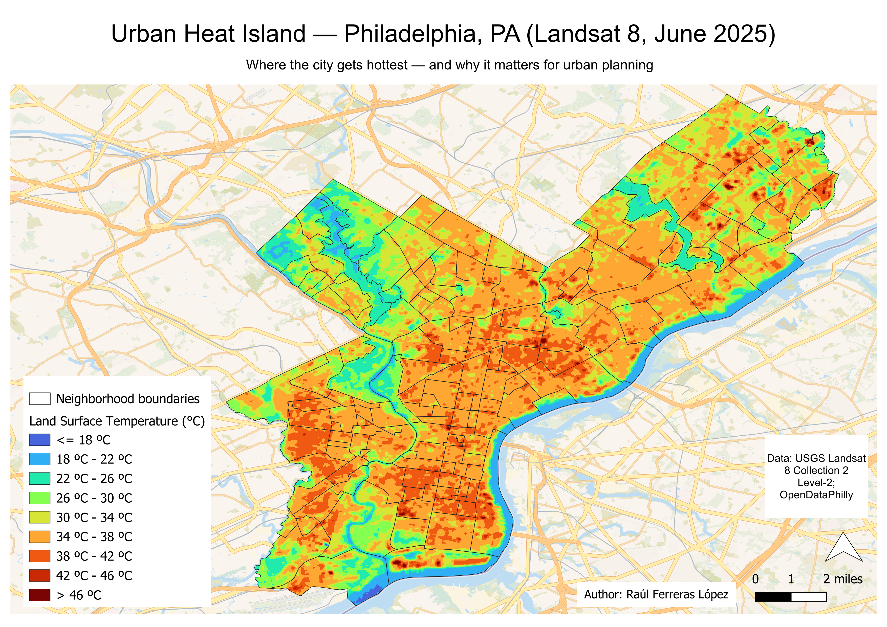

Production Case Studies

Automated 4D Solar Yield & Shading Site-Screening Engine
Manual terrain, slope, and hourly shadow analysis across candidate parcels slows down solar/BESS site selection and ties up senior analysts in desktop GIS software.
Built a containerized PostGIS + FastAPI + pvlib pipeline ingesting 1m USGS DEM and building footprints to run automated hourly 4D shadow ray-tracing and irradiance modeling at scale.
Processes 2,080 buildings (≈452 ha) in ~10 minutes end-to-end without manual intervention, outputting queryable kWh/m² yield losses via REST API directly into QGIS or web dashboards.

Automated Terrain Flood Risk & Critical Route Vulnerability Pipeline
Environmental and infrastructure consultancies spend dozens of billable hours repeating manual hydrological modeling and network disruption checks across multiple desktop licenses.
Engineered a reproducible ETL and hydrological simulation pipeline combining 10m USGS 3DEP terrain data, WhiteboxTools, PostGIS, and NetworkX to identify flood-exposed corridors and “asphalt island” bottlenecks automatically.
Replaces manual desktop geoprocessing with a single containerized run covering ≈167 km² and 11,967 road segments in ~12 minutes, ready for white-label deployment in client cloud environments with MapLibre GL visualization.
Services
2-Week Feasibility Sprint
Audit of your current spatial workflow and a working prototype on an anonymized data sample, with quantified savings in analyst hours and desktop licenses. Zero lock-in: delivered in your own cloud and GitHub, with clear success criteria agreed up front.
White-Label Technical Support
Under NDA and under your brand. For environmental, solar and engineering consultancies that win projects needing PostGIS, Python or Docker, without adding a full-time hire.
Desktop-to-Pipeline Migration
Repetitive DEM, flood and zoning workflows moved from licensed desktop software into reproducible PostGIS/Python containers, still connected to QGIS or ArcGIS Pro.
Delivery Standards
Dockerized and tested code, documentation, and processing inside your VPC. Professional services with full IP assignment to you.
Remote spatial engineering from Santiago, Chile
I'm an independent geospatial engineer based in Santiago, Chile. My working hours overlap with the US East Coast and with UK/European mornings, so we can collaborate in real time.
I run 2-week feasibility sprints (zero lock-in, deployed in your cloud and your GitHub) and provide white-label technical support under NDA for environmental, solar and engineering consultancies.
Additional Spatial R&D & Archive
Earlier analytical work, kept for reference. Expand any item for the full project.
Urban Heat Resilience Intelligence Platform (Brickell)
Parcel-level climate risk engine that cross-references extreme heat stress with sociodemographic vulnerability, producing a Thermal Vulnerability Index per asset. Built on PostGIS, Python and a 3D digital twin dashboard.
Canary Wharf 3D Service Deserts
15-Minute City spatial intelligence pipeline and 3D digital twin identifying urban micro-retail deserts in Canary Wharf using PostGIS, Python and Pydeck.
Energy Vulnerability Index Turin

Identify which census tracts in Turin concentrate the highest energy vulnerability, combining socioeconomic, housing and demographic indicators to support targeted policy intervention.
Construction of a composite Energy Vulnerability Index (EVI) using normalized indicators from ISTAT census data at the finest available spatial resolution. Spatial autocorrelation analysis with Getis-Ord Gi* hotspot detection and Local Indicators of Spatial Association (LISA) to identify statistically significant vulnerability clusters.
High-resolution vulnerability maps and cluster analysis revealing spatial patterns invisible in aggregate statistics, enabling decision-makers to prioritize intervention areas with precision.
Urban Heat Island Analysis Philadelphia

Identify where Philadelphia's urban heat concentrates at the neighborhood scale and quantify the temperature gap between the hottest built-up districts and the city's green and riparian corridors, providing spatial evidence for heat-equity and urban greening policy.
Land Surface Temperature (LST) retrieval from Landsat 8 Band 10 (TIRS) using the radiometric calibration and emissivity correction workflow (USGS Collection 2, Level-2). Thermal classification into nine LST ranges (≤18 °C to >46 °C) overlaid with OpenDataPhilly neighborhood boundaries.
High-resolution LST map revealing a pronounced heat island in central and south Philadelphia (38–46+ °C) against cooler green and waterfront buffers (18–26 °C), with intra-city differentials above 28 °C.
Urban Service Accessibility Index Barcelona

Measure the real accessibility of urban services across Barcelona's census sections to identify underserved areas and support urban planning decisions.
Construction of a composite Urban Service Accessibility Index integrating OpenStreetMap data and Barcelona's open data portal at census section level. Multi-criteria spatial analysis combining proximity, density and coverage of key urban services.
Accessibility classification map identifying high, medium-high, medium-low and low accessibility zones, providing a spatial evidence base for equitable urban service planning.
Let's scope your bottleneck
Tell me which spatial workflow is eating your team's hours. In a 20-minute call we'll quantify it and decide whether a 2-week sprint makes sense.